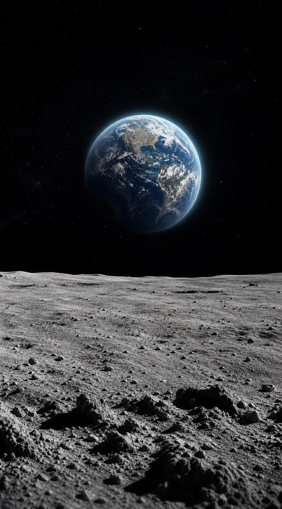

The universe of facts
The Artemis program will return humans to the Moon more than 50 years after the last Apollo landing.


Artemis is named after the Greek goddess of the Moon and the twin sister of Apollo.
The Space Lauch System (SLS) is NASA's most powerful rocket ever built.
Orion is designed to carry astronaunts farther into space than any previous NASA spacecraft.
The Moon's south pole is one of the most exciting places in the Solar System because it may contain water ice.